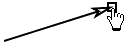

A vector track can represent any vector but is commonly used as a force in a force diagram. Since it is a track, the force may vary with time (i.e. with step number).
Note: Many introductory physics topics involve constant forces or forces at a single instant of time. By defining a video clip with a single frame and using vector and vector sum tracks, these situations can be modeled and analyzed visually using Tracker. The background video can be a single frame of a movie, a still image or a blank white screen.

Shift-click the crosshair cursor at the tail and drag the tip with the hand cursor to mark a vector step. Vectors are drawn with solid lines to distinguish them from motion vectors.
You can also shift-enter instead of using the mouse to mark a vector step that is identical to the previous step.
Vectors have visible trails by default. Hide or shorten the trails if desired using the trails button on the toolbar.

Select any point on a vector to display its components on the toolbar. Enter a desired value in the appropriate field or select and drag/nudge the tip to change the components.

Drag or nudge the center of a vector to move it without changing its components.
When the axes are visible you can drop a vector with its tail near the origin and it will snap and attach to the origin. This is useful for estimating and visualizing its components.

Attach all vectors quickly to the origin with the Tails to Origin menu item in the vector track menu.


Vectors can be linked tip-to-tail to visually determine their vector sum. To link vectors, drag and drop one with its tail near the tip of the other. The dropped vector will snap to the tip when it links. You may continue to link additional vectors in the same way to form a chain.

Note: Tracker makes no attempt to check whether it is mathematically appropriate or physically meaningful to link a given set of vectors--it simply makes it possible.
When you drag the first vector in a chain of linked vectors, the chain moves as a unit and the vectors remain linked. When you drag any vector further up the chain, however, it detaches and "breaks" the chain.